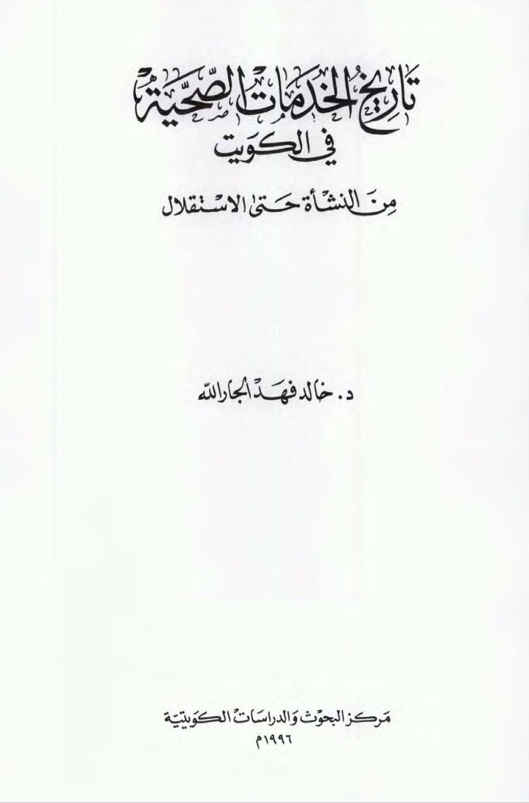
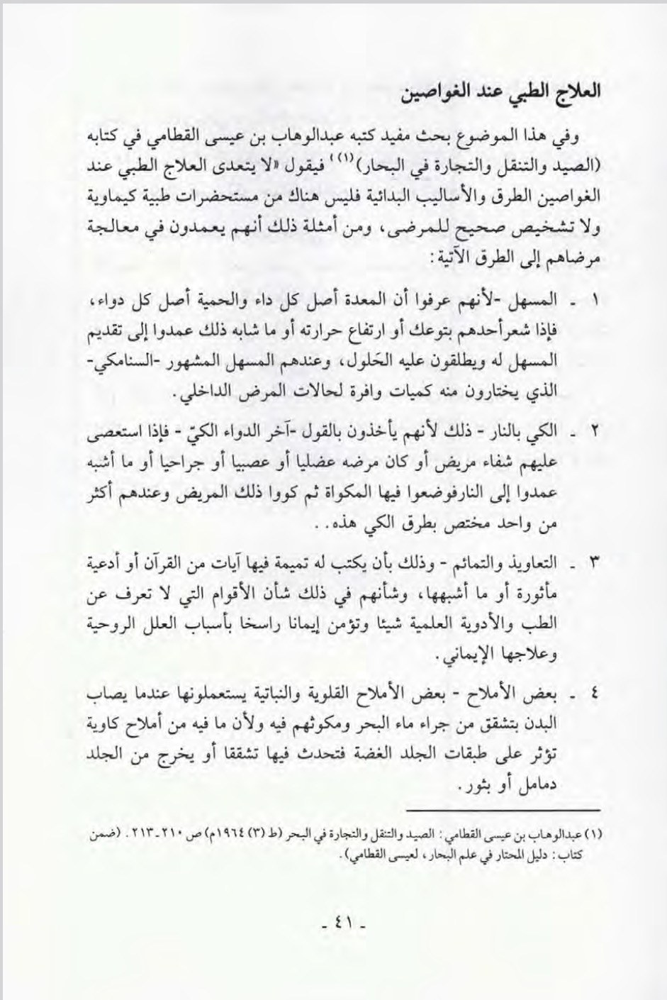

١٩٩٦ · صفحات من كتاب د. خالد فهد الجارالله، تاريخ الخدمات الصحية في الكويت من النشأة حتى الاستقلال، مركز البحوث والدراسات الكويتية، ١٩٩٦
تاريخ الخدمات الصحية في الكويت: عبدالوهاب بن عيسى القطامي في العلاج الطبي عند الغواصين
ما هي
تعتمد الصفحة ٤١ «العلاج الطبي عند الغواصين» على «بحث مفيد كتبه عبدالوهاب بن عيسى القطامي في كتابه الصيد والتنقل والتجارة في البحار» وتنقل قوله: «لا يتعدى العلاج الطبي عند الغواصين الطرق والأساليب البدائية»، وتذكر الطرق الأربع: المسهل (السنامكي)، والكي بالنار، والتعاويذ والتمائم، وبعض الأملاح لتشقق الجلد من ماء البحر. ويحيل الهامش إلى كتابه، الطبعة الثالثة ١٩٦٤، ص ٢١٠ إلى ٢١٣، ضمن كتاب دليل المحتار في علم البحار لعيسى القطامي. وتذكر قائمة المصادر في الصفحة ٢٩٠: «عبدالوهاب بن عيسى القطامي: الصيد والتنقل والتجارة في البحار، الكويت ١٩٦٨».
أهميتها
كتاب في تاريخ الخدمات الصحية في الكويت يعتمد على ما كتبه عبدالوهاب بن عيسى القطامي مصدرا عن الطب في البحر.
صور الصفحات


ملاحظات
نعرض هنا الصفحات الأولى فقط، ويرى أفراد العائلة بعد تسجيل الدخول كل الصفحات وعددها 3.
المصادر
د. خالد فهد الجارالله، تاريخ الخدمات الصحية في الكويت من النشأة حتى الاستقلال، مركز البحوث والدراسات الكويتية، الكويت، ١٩٩٦، ص ٤١ و٢٩٠
كيف كُتب هذا النص: مصورة من الصفحات المطبوعة.
افتح في الموقع التفاعلي